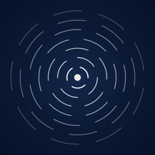

A 3D audio maze you play in the dark. Questions, problems or feedback.
Email yicokocak@hotmail.com and I will reply personally. If something is not working, please mention your iPhone model and iOS version.
Tap anywhere to take three steps that way, or hold to keep walking. Every sound you make sends out echoes that light up the walls for a moment. Follow the sound of the bell and reach it to finish the chapter. Headphones make it much easier.
Hold your finger on the glowing dot (that is you) to hum. Hold longer to hear further. Slide up or down while humming to change the note. Double tap anywhere to clap: it lights up a lot, but everything in the dark hears it.
When your echoes hit a brass door, it shows a row of small gold dots. Hold the dot to hum, slide to the step with the same number of dots, and keep humming near the door. You feel a buzz when the note is right, and the door opens.
With AirPods Pro, AirPods Max or AirPods (3rd generation and later), sounds stay where they are in the room when you turn your head. Allow Motion access when asked. You can turn it on or off in the pause menu.
Every chapter you start uses one play, and you get 10. When they run out, you can watch a short video ad for 10 more. If no ad is available, you get 10 for free. Ad Free is a one time purchase that removes the limit and the ads.
When the out of plays screen appears, tap Restore, using the same Apple ID.
Tap the trophy on the chapter map. Achievements and leaderboards are in Game Center, so sign in to Game Center on your iPhone to earn them.
Read the Privacy Policy.